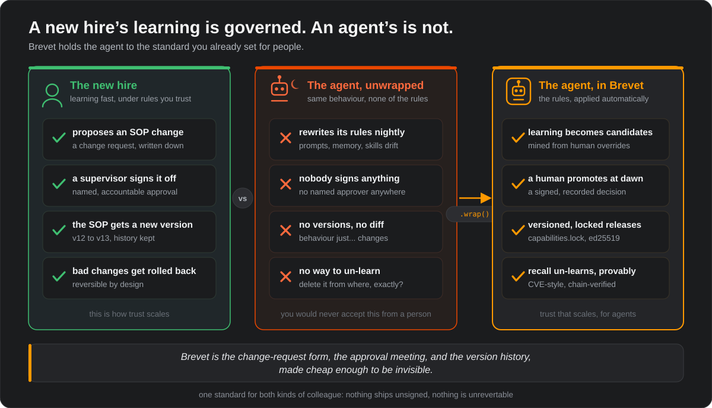
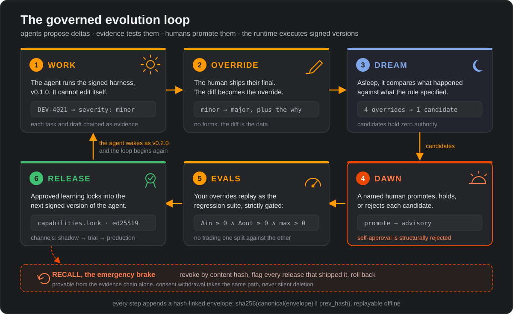
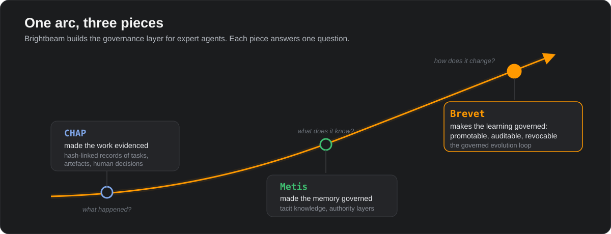
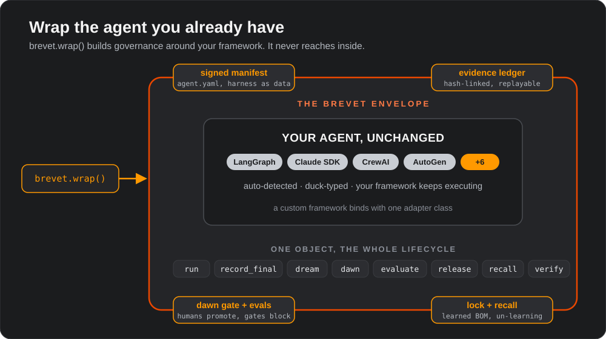

Agents can now improve themselves: new rules, new skills, new memory. Brevet makes that learning promotable, auditable, and revocable, wrapped around the agent framework you already use.
n. a commission conferring rank by signed warrant: provisional, earned in the field, and revocable by the authority that granted it. That is exactly what a promotion here gives a capability. Authority that is signed, conditional, and can be taken back.
Maybe it stored a memory. Maybe a self-improvement loop rewrote part of its prompt. Maybe someone pasted a new rule into a config. On Wednesday it behaves differently, and mostly better. Then something goes wrong, or an auditor walks in, and someone asks three questions that today almost nobody can answer:
Not the model weights. The rules, skills, memories and tool bindings the agent has picked up since you deployed it. Today that knowledge lives in an invisible pile of prompts and glue.
Brevet: capabilities.lock, a bill of materials for learned behaviour.
A learned behaviour changed a real decision. Which human said that change could ship? On what evidence? Today: nobody did. It just accumulated.
Brevet: every promotion is a signed, recorded human decision.
The learned rule turned out to be wrong. Delete it? From where? From which versions? And how do you show the regulator it is really gone?
Brevet: recall, CVE-style un-learning, provable from the chain.

Brevet invents almost nothing. Each of its mechanisms is a control you already rely on, moved to the one place that has none: what your agent learns.
You pin every dependency before you ship.
npm writes a lockfile so the same code installs the same way twice, and every package has a name and a version. Brevet writes the same file for learned behaviour: every capability in a release, its content hash, and the human who approved it.
A promising molecule is not a medicine.
Pharma lets discovery be bold because approval is a separate act: candidates pass phased trials before anyone prescribes them. Brevet quarantines what the agent discovers the same way. A candidate earns authority through human gates, and releases climb the channels.
When a dependency turns dangerous, you do not shrug.
The ecosystem publishes an advisory, names the affected versions, and everyone can verify the fix. Brevet does the same for something an agent learned: revoke it by content hash, flag every release that shipped it, and let anyone replay the rollback from the chain.
An aircraft flies only with the release signed.
Every modification is logged, signed, and traceable to a named engineer; otherwise the plane stays in the hangar. The waking agent runs exactly one signed harness version, and what it wakes up knowing is a recorded human decision. No signature, no flight.
Four controls, each boring in its home discipline. Brevet's contribution is applying them, together, to agent learning.
This is the exact sequence brevet demo runs:
a deviation-triage assistant in a pharma quality team. Click through, or press play.

A coding agent can grade itself against tests. A quality reviewer cannot: no oracle says whether a deviation was major. So Brevet uses the signal such work already produces. Every time an expert corrects the agent, that correction becomes a labelled test case. Your override history is the benchmark.
Deviation triage, batch record review, CAPA drafting. Learned severity rules must be approved, versioned, and recallable. Change control is already the law here; Brevet speaks it natively.
Alert triage, case summaries, exception handling. When the agent learns that a pattern is benign, that is a policy change. Someone must own it, and the auditor must find them.
Narratives, coding suggestions, signal triage. Experts correct drafts all day. Brevet turns those corrections into candidates, evals, and governed improvement.
Shift handover, maintenance triage, quality inspection. Tacit knowledge like “vibration on CIP duty means seal wear” becomes an explicit, conditional, revocable capability.
Ticket triage and runbook agents that learn each client’s quirks. The lockfile tells you exactly what each deployment has learned, per client, per version.
Not regulated? The questions still bite the first time a learned behaviour misfires in production and nobody can say when it appeared or how to unlearn it.
Brightbeam builds the governance layer for expert agents in regulated industry. Each piece answers one question about a working agent: what happened, what does it know, and how does it change.

Research papers score self-evolving agents on one axis: did the pass rate go up? Anyone who owns one in production needs four. Brevet is shaped so that all four are answerable by construction, and its benchmark design scores them all:
brevet.wrap() auto-detects ten frameworks,
generates a signed-manifest scaffold, and starts the evidence chain. It never modifies
the wrapped object. Execution stays in your framework; Brevet owns the envelope.

These terms come from Brightbeam’s research on governed agent adaptation. The code, the schemas, and the spec use each one exactly as defined here.
Everything around the model that makes it an
agent: prompts, tools, loop policy, memory bindings, safety rails. Brevet stores the
harness as data (agent.yaml), versioned and signed.
What actually happened (traces, human finals) set against what the signed harness specified. The ⊖ is a structured comparison of matched episodes, not subtraction. Every candidate is mined from this difference.
The offline mining run. It computes the delta, clusters recurring divergences by failure signature, and emits candidates and compiled eval cases. Nothing it produces carries authority.
The human review moment. A named human or
mission group applies promote, hold,
reject, or re_elicit to each
candidate, and the ledger records the decision.
The accountable review board: a named
panel of humans, never a single expert. It weighs evidence, resolves conflicts, decides
promotion or rejection, signs releases, and issues recalls, as
mission_group:right_first_time does in the demo.
A human judgment, captured as the diff between the agent’s draft and the human’s shipped final, plus rationale and tags. Refining: same decision, better wording. Substituting: a different decision, a real failure label.
The unit of learned capability: content, provenance, conditions, confidence, authority, validation-state, plus a kind (prompt rule, skill, tool binding, eval case, ...). One lifecycle for all of them.
Evidence: quarantined, review only. Advisory: may inform suggestions. Controlled: may shape act-class tools after formal review. Authority only increases through a recorded human decision.
Endogenous: the system inferred it from its own operational history; it enters quarantined, as a hypothesis held to a higher evidence bar, and can never promote itself. Exogenous: a human carried it in or confirmed it. Human judgment grounds and verifies machine inference.
The release rule:
Δin ≥ 0 ∧ Δout ≥ 0 ∧ max > 0.
A change may never trade one eval split against the other, even if the total improves.
The bill of materials for learned behaviour: every approved capability with its content hash, authority layer, approver, and evidence references. One file per release.
The append-only ledger:
sha256(canonical(envelope) ‖ prev_hash). Anyone can replay
it offline and detect insertion, alteration, or deletion.
The full set, including channels, consent scope, failure signatures, and validation states, lives in GLOSSARY.md.